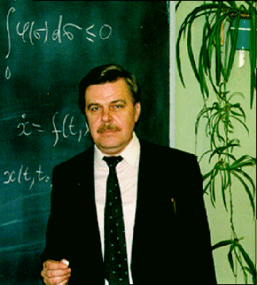
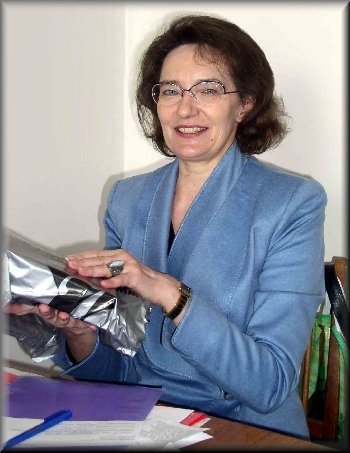

Математико-механический факультет
Математико-механический факультет
Санкт-Петербургского государственного университета
Кафедра прикладной кибернетики

 Математико-механический факультет
Математико-механический факультет
Санкт-Петербургского государственного университета
Кафедра прикладной кибернетики
Сотрудники
Леонов Геннадий Алексеевич
Декан, заведующий кафедрой, профессор, доктор физико-математических наук, член-корреспондент Российской Академии Наук
Тел.:+7 (812) 428-6944, 428-4210
Почта.:leonov@math.spbu.ru
Научные направления, темы для курсовых:
Райтманн Фолькер
Профессор, доктор физ-мат наук, DAAD invited professor, Germany
Почта.:vreitmann@math.spbu.ru
Научные направления, темы для курсовых:
Кузнецов Николай Владимирович
Доцент, ученый секретарь кафедры
Почта.:nkuznetsov239@gmail.com
Научные направления, темы для курсовых:
Селеджи Светлана Михайловна
Заместитель декана, старший преподаватель
Почта.:ssm@ss1563.spb.edu
Научные направления, темы для курсовых: